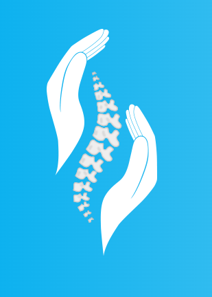
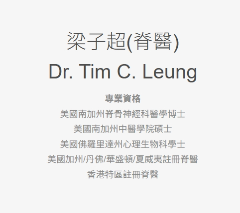

Website Builder Software
梁子超 (脊醫) | Dr. Tim C. Leung
脊骨神經科醫生 | Doctor of Chiropractic
專治: 頸 / 腰 / 頭痛 / 及各種痛症

BACK2LIFE HK CHIROPRACTIC
梁子超 (脊醫) | Dr. Tim C. Leung
脊骨神經科醫生 | Doctor of Chiropractic
專治： 頸/腰/頭痛/及各種痛症
診症時間
星期一至星期四 (上午十時至下午八時)
Consultation Hours
Monday - Thursday (10:00am - 8:00pm)
新界深井青山公路42號陳記廣場地下F鋪
Shop F, G/F, 42 Castle Peak Road,
Sham Tseng, New Territories
Tel: 852 2891 6228
Email: Back2lifehealth@yahoo.com
Website: www.Back2lifehkchiropractic.com
Website Builder Software